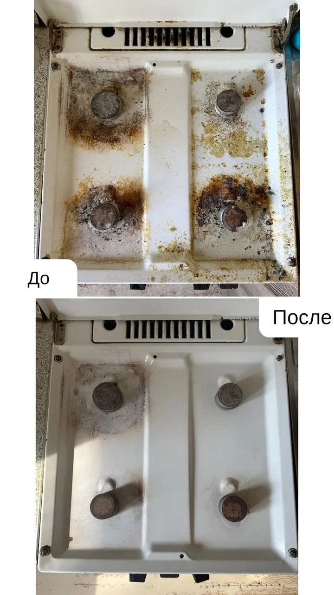
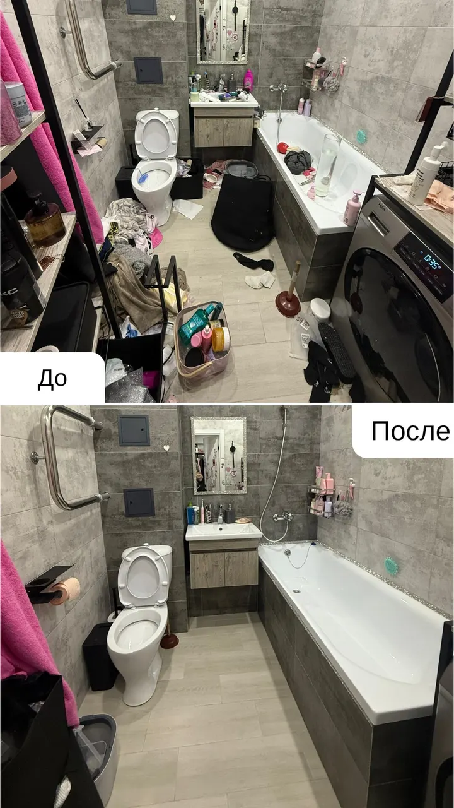
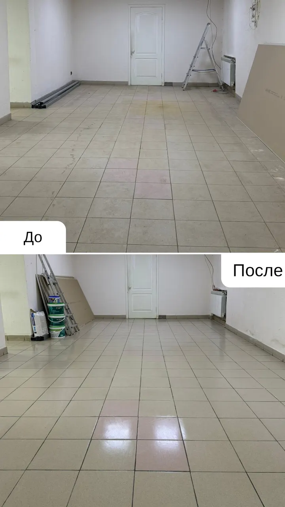
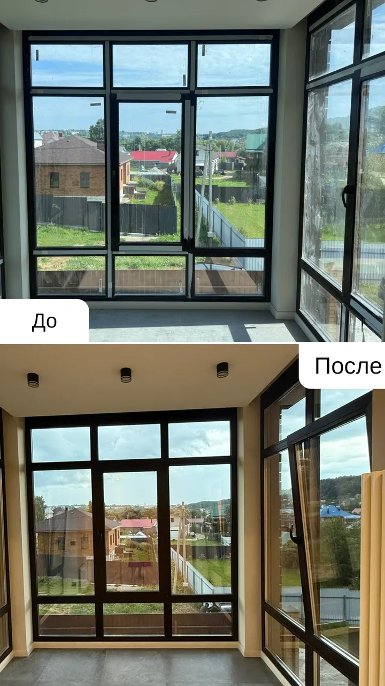
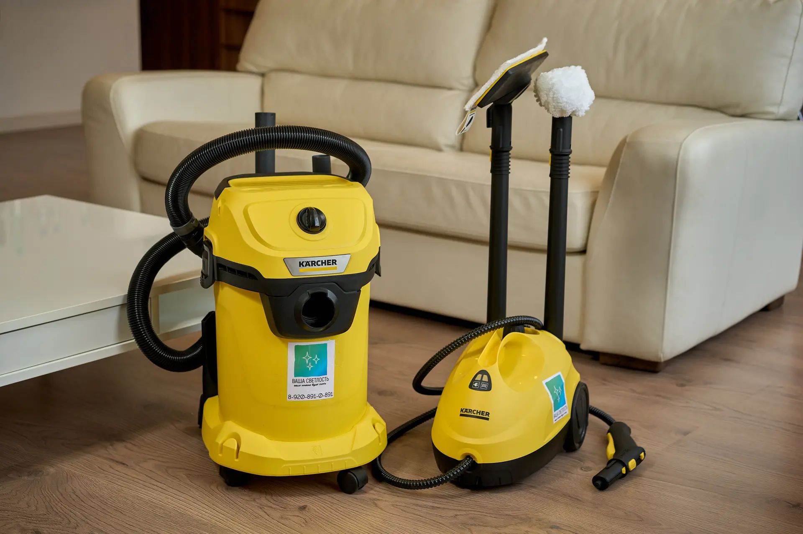

Назовите метраж и вид уборки – вернёмся с ценой и датой.
Как читать эту страницу
Ниже – акт приёмки уборки
Список по четырём зонам и фото до и после с настоящих объектов. Галочки в шапке считают, пока вы листаете.
всё
«Всё помоем» – это не список
Так обычно отвечают по телефону. Дальше – «зависит от площади», «приедем после обеда», и вечером вы сами проверяете, протёрли ли за холодильником.
«Зависит от площади»Цену узнаёте, когда клинер уже стоит в прихожей
«Приедем после обеда»После обеда – это с часу до семи, и всё это время вы дома
«Всё помыли»Что именно – спросить не по чему. Нет списка, значит нет и приёмки
Акт приёмки уборки
Четыре зоны, 31 пункт. В колонках отмечено, что входит в каждый вид уборки. Рядом – фото до и после с настоящих объектов, чтобы результат можно было увидеть, а не только прочитать.
Пподдерживающая
Ггенеральная
Рпосле ремонта
01
Кухня
7 пунктов

Газовая плита: до и после. Плита, фартук и фасады снаружи – в каждой уборке. Духовка, холодильник и СВЧ внутри – отдельно, по прайсу.
ПунктПГР
1Раковина, смеситель, посуда в раковине
2Столешница, фартук, фасады снаружи
3Плита и варочная панель снаружи
4Холодильник снаружи, ручки, уплотнители
5Вытяжка снаружи и жировой фильтр
6Пол, плинтусы, мусор вынести, ведро вымыть
7Строительная пыль со стен, потолка и светильниковСледы краски, клея и защитной плёнки
02
Санузел
10 пунктов

Санузел: до и после. Сантехника, стекло и зеркало – всегда. Плитка до потолка, налёт и стиральная машина – в генеральной.
17Следы цемента и затирки на плиткеЗащитная плёнка с двери и сантехники
03
Комнаты
8 пунктов

Пол в помещении: до и после. Пыль с открытых поверхностей, пылесос и полы – всегда. Высота и шкафы внутри – в генеральной.
ПунктПГР
18Пыль с открытых поверхностей: столы, полки, техника
19Пыль на высоте: шкафы сверху, карнизы
20Шкафы и полки внутри, с разбором вещей
21Пылесос: пол, ковры, мягкая мебель, под кроватью
22Пол влажной уборкой, плинтусы
23Двери, ручки, выключатели, розетки
24Кровать заправить, вещи по местам, мусор вынести
25Строительная пыль со стен и потолкаПлёнка и наклейки с окон и дверей
04
Прихожая и балкон
6 пунктов

Окна лоджии: до и после. Мойка окон – отдельная услуга по прайсу. Зеркало, дверь и пол – всегда, балкон – в генеральной и после ремонта.
ПунктПГР
26Зеркало, входная дверь изнутри, ручки, домофон
27Обувница, вешалка и тумба снаружи, обувь на полку
28Шкаф внутри, антресоли
29Пол, плинтусы, коврик у двери вытряхнуть
30Балкон: пол, подоконник
31Мусор вынестиПосле ремонта – мешки со строительным мусором до контейнера у подъезда

Как проходит
1 / 4 · Заявка
Пишете метраж, вид уборки и адрес
Отвечаем суммой и свободными датами. Никаких «приедем, посмотрим»: цена известна до приезда.
2 / 4 · Согласование
Согласуем время и состав уборки
Договариваемся, во сколько приедем и что входит именно в вашу уборку, – по списку из акта выше.
3 / 4 · Приезд
Приезжаем со своим оборудованием
Пылесос-экстрактор, парогенератор и средства – наши. Ваша задача – открыть дверь.
4 / 4 · Приёмка
Проходите по списку и смотрите результат
Что-то не устроило – скажите на месте, разберём сразу.
1 Заявка2 Согласование3 Приезд4 Приёмка
Цена называется до приезда
Назовите площадь и вид уборки – получите сумму, а не «зависит от площади». Буква у каждого вида – это колонка в акте выше. Цифры ниже – ориентир, точную цену называем после метража.
«Спасибо компании за профессиональную, качественную уборку. Клининговая компания отзывчива к пожеланиям, менеджер сразу обозначает все стоимости, без каких либо скрытых платежей. С уважением сотрудничать в дальнейшем!»
Алина Козловская · 1 августа 2024 ·
«После ремонта вызвали клининг Ваша Светлость. Очень остались довольны. Спасибо большое за добросовестный подход к работе. Очень вежливые работники. Будем обращаться еще не раз.»
Ирэна Макарова · 8 февраля 2025 ·
«Две девушки в течении дня смогли отдраить убитую двушку с максимально грязной кухней, к газовой плите подходить было страшно. За что им огромное спасибо. Цена за уборку нормальная.»
weldstroy weldstroy · 18 мая 2025 ·
Акт приёмки · 31 из 31 · принято
Назовите метраж – вернёмся с ценой и датой
Напишите площадь, вид уборки и удобный день. Ответим суммой и свободным временем в рабочие часы.